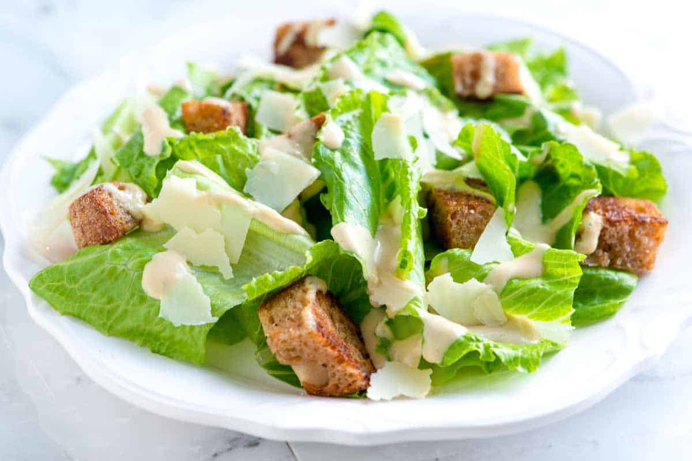
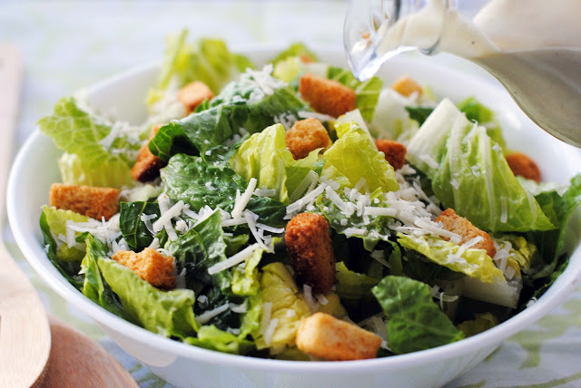

Sean Cornely's Recipes
DART 340
Welcome to Sean Cornely's Recipes. Here you will find 3 easy to make recipes for a college budget.
Cesar Salad
A healthy option for when you need a quick meal in between classes!
 |
 |
 |
 |
INGREDIENTS & NECESSITIES
- Romainne Lettuce
- Shredded Parmesean Cheese
- Croutons
- Cesar Dressing
- Mixing Bowl
COOKING STEPS
- Start by washing your Romainee Lettuce with water and pat dry with a paper towel.
- Chop Lettuce into chunks until they are a size comfortable enough to eat whole.
- Add your lettuce and croutons into the mixing bowl.
- Drizzle Cesar dressing onto the croutons and lettuce
- Mix thoroughly
- Sprinkle the shredded parmesean cheese into mixing bowl
- Put your salad in to a serving bowl.
- ENJOY!